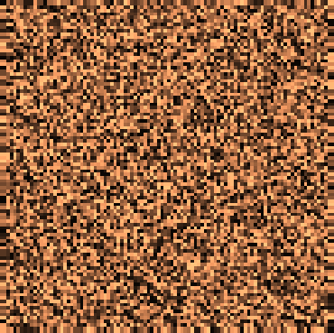
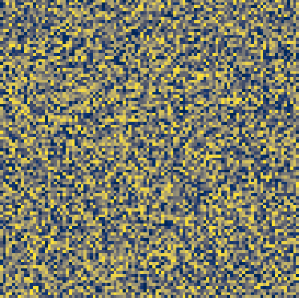

I recently began working on this research project as part of a Math REU at Northeastern University along with Kaan Volkan and Naiwen Wang. We are working with professor Calina Copos and graduate mentor Tanishq Bhatia to look into partial differential equations and stochastic models governing pattern formation, specifically with respect to proteins in the cell cortex.
Here is a description of our project. Below, you can see some cool animations of PDEs that I created using python. The code to make them, along with annotations and sources, can be found on our GitHub repository. I will update this page as the project progresses.
 